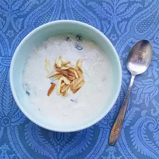

Kheer

Description
This recipe is for a lovely rice pudding dish
Ingredients
- 1 cup rice
- 3 cup milk
- 2 tablespoon sugar
- 1 tsp cardamom
- 1/2 cup split cashews
- 1/2 cup shredded coconut and raisin mix
Steps
- Wash rice 3 times with cold water and add milk and cook in ricecooker over slow heat.
- Once milk thickens add sugar cardamom, cashwes, coconut and rasins.
- Keep stirring for 25-30 min over low heat until the rice is cooked.
- Let cool before serving. For summer time refrigerate and serve cold